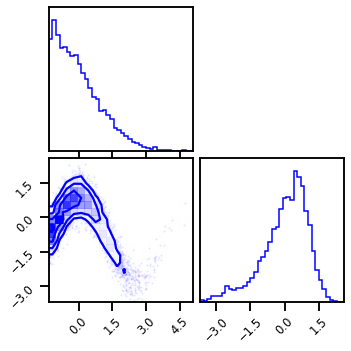
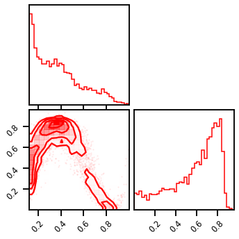
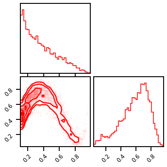
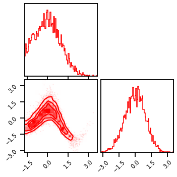
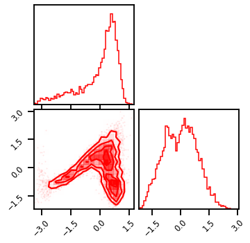
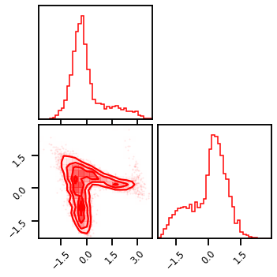
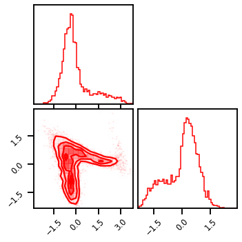
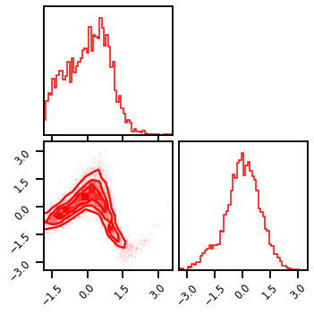
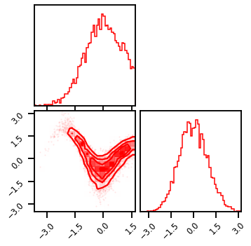

Univariate Gaussianization¶
#@title Install Packages
# %%capture
try:
import sys, os
from pyprojroot import here
# spyder up to find the root
root = here(project_files=[".here"])
# append to path
sys.path.append(str(root))
except ModuleNotFoundError:
import os
os.system("pip install objax chex")
os.system("pip install git+https://github.com/IPL-UV/rbig_jax.git#egg=rbig_jax")
# jax packages
import jax
import jax.numpy as jnp
from jax.config import config
# import chex
config.update("jax_enable_x64", True)
import objax
import chex
import numpy as np
from functools import partial
# library functions
from rbig_jax.data import get_classic
from rbig_jax.transforms.parametric.mixture.logistic import InitMixtureLogisticCDF
from rbig_jax.transforms.parametric.mixture.gaussian import InitMixtureGaussianCDF
from rbig_jax.transforms.logit import InitLogitTransform
from rbig_jax.transforms.inversecdf import InitInverseGaussCDF
from rbig_jax.transforms.parametric.householder import InitHouseHolder
from distrax._src.bijectors.sigmoid import Sigmoid
from distrax._src.bijectors.inverse import Inverse
KEY = jax.random.PRNGKey(123)
# logging
import tqdm
import wandb
# plot methods
import matplotlib.pyplot as plt
from matplotlib import cm
import seaborn as sns
import corner
from IPython.display import HTML
sns.reset_defaults()
sns.set_context(context="talk", font_scale=0.7)
%load_ext lab_black
%matplotlib inline
%load_ext autoreload
%autoreload 2
INFO:tensorflow:Enabling eager execution
INFO:tensorflow:Enabling v2 tensorshape
INFO:tensorflow:Enabling resource variables
INFO:tensorflow:Enabling tensor equality
INFO:tensorflow:Enabling control flow v2
WARNING:absl:No GPU/TPU found, falling back to CPU. (Set TF_CPP_MIN_LOG_LEVEL=0 and rerun for more info.)
Data¶
from rbig_jax.data import NoisySineDataset as PlaneDataset
from sklearn.preprocessing import StandardScaler
# %%wandb
# get data
seed = 123
n_samples = 1_000_000
n_features = 2
noise = 0.1
n_train = 5_000
n_valid = 1_000
ds = PlaneDataset(n_samples=5_000, noise=noise, seed=seed)
data = ds[:]
data = StandardScaler().fit_transform(data)
# plot data
fig = corner.corner(data, color="blue", hist_bin_factor=2)

X = jnp.array(data, dtype=np.float64)
DataLoader¶
from rbig_jax.data import GenericDataset, collate_fn
import torch.multiprocessing as multiprocessing
from torch.utils.data import DataLoader
# multiprocessing.set_start_method("spawn")
# initialize dataset
ds_train = PlaneDataset(n_samples=n_train, noise=noise, seed=seed)
ds_valid = PlaneDataset(n_samples=n_valid, noise=noise, seed=seed)
# initialize dataloader
batch_size = 256
shuffle = True
train_dl = DataLoader(
ds_train, batch_size=batch_size, shuffle=shuffle, collate_fn=None, num_workers=0
)
valid_dl = DataLoader(
ds_valid, batch_size=batch_size, shuffle=False, collate_fn=None, num_workers=0
)
Layer I - Marginal Gaussianization¶
Kernel Density Estimation¶
from rbig_jax.transforms.kde import InitUniKDETransform, estimate_bw
# histogram params
support_extension = 20
alpha = 1e-5
precision = 100
nbins = None # init_bin_estimator("sqrt") #bins #cott"#int(np.sqrt(X.shape[0]))
jitted = True
# KDE specific Transform
bw = "scott" # estimate_bw(X.shape[0], 1, "scott")
method = "kde"
init_kde_f = InitUniKDETransform(
shape=X.shape, support_extension=support_extension, precision=precision, bw=bw
)
# initialize bijector
X_u, kde_bijector = init_kde_f.bijector_and_transform(X)
# forward transformation
X_l1 = kde_bijector.forward(X)
# inverse transformation
X_approx = kde_bijector.inverse(X_l1)
# gradient transformation
X_l1_ldj = kde_bijector.forward_log_det_jacobian(X_l1)
# plot Transformations
fig = corner.corner(X_l1, color="red", hist_bin_factor=2)
fig.suptitle("Forward Transformation")
fig = corner.corner(X_approx, color="red", hist_bin_factor=2)
fig.suptitle("Inverse Transformation")
fig = corner.corner(X_l1_ldj, color="red", hist_bin_factor=2)
fig.suptitle("Gradient Transformation")
Text(0.5, 0.98, 'Gradient Transformation')
Histogram Transformation¶
from rbig_jax.transforms.histogram import InitUniHistTransform
# histogram params
support_extension = 20
alpha = 1e-5
precision = 100
nbins = None # init_bin_estimator("sqrt") #bins #cott"#int(np.sqrt(X.shape[0]))
jitted = True
# KDE specific Transform
bw = "scott" # estimate_bw(X.shape[0], 1, "scott")
method = "kde"
init_hist_f = InitUniHistTransform(
n_samples=X.shape[0],
nbins=nbins,
support_extension=support_extension,
precision=precision,
alpha=alpha,
jitted=jitted,
)
# initialize bijector
X_u, hist_bijector = init_hist_f.bijector_and_transform(X)
# forward transformation
X_l1 = hist_bijector.forward(X)
# inverse transformation
X_approx = hist_bijector.inverse(X_l1)
# gradient transformation
X_l1_ldj = hist_bijector.forward_log_det_jacobian(X_l1)
# plot Transformations
fig = corner.corner(X_l1, color="red", hist_bin_factor=2)
fig.suptitle("Forward Transformation")
fig = corner.corner(X_approx, color="red", hist_bin_factor=2)
fig.suptitle("Inverse Transformation")
fig = corner.corner(X_l1_ldj, color="red", hist_bin_factor=2)
fig.suptitle("Gradient Transformation")
Text(0.5, 0.98, 'Gradient Transformation')
Mixture Gaussian Distribution¶
from rbig_jax.transforms.parametric.mixture.init import init_mixture_weights
from rbig_jax.transforms.parametric.mixture.gaussian import (
mixture_gaussian_cdf,
mixture_gaussian_invcdf,
mixture_gaussian_log_pdf,
)
Random Initialization¶
# parameters
n_components = 20
n_features = 2
shape = (2,)
key = jax.random.PRNGKey(123)
init_method = "random"
init_mixcdf_f = InitMixtureLogisticCDF(
n_components=n_components, init_method=init_method
)
weights, means, unconstrained_scales = init_mixture_weights(
rng=key, n_features=2, n_components=20, method="random", X=X
)
scales = jax.nn.softplus(unconstrained_scales)
scales.shape
(2, 20)
X_u = mixture_gaussian_cdf(X, weights, means, scales)
fig = corner.corner(X_u, color="red", hist_bin_factor=2)

# # initialize bijector
# X_u, mixgauss_bijector = init_mixcdf_f.bijector_and_transform(
# inputs=X, rng=key, n_features=n_features
# )
# # forward transformation
# X_u = mixgauss_bijector.forward(X)
# # inverse transformation
# X_approx = mixgauss_bijector.inverse(X_l1)
# # gradient transformation
# X_u_ldj = mixgauss_bijector.forward_log_det_jacobian(X_l1)
# # plot Transformations
# fig = corner.corner(X_u, color="red", hist_bin_factor=2)
# fig.suptitle("Forward Transformation")
# fig = corner.corner(X_approx, color="red", hist_bin_factor=2)
# fig.suptitle("Inverse Transformation")
# fig = corner.corner(X_u_ldj, color="red", hist_bin_factor=2)
# fig.suptitle("Gradient Transformation")
Gaussian Mixture Model (E-M)¶
weights, means, unconstrained_scales = init_mixture_weights(
rng=key, n_features=2, n_components=20, method="gmm", X=X
)
scales = jax.nn.softplus(unconstrained_scales)
scales = jnp.ones_like(scales)
# scales = unconstrained_scales
scales.shape
(2, 20)
def mixture_gaussian_cdf(inputs, weights, means, scales):
inputs = jnp.expand_dims(X, axis=-1)
# normalize
inputs = (inputs - means) / scales
# normalize prior logits
weights = jax.nn.log_softmax(weights, axis=1)
log_cdfs = weights + jax.scipy.special.log_ndtr(inputs)
# calculate log cdf
log_cdfs = jax.nn.logsumexp(log_cdfs, axis=-1)
return jnp.exp(log_cdfs)
X_u = mixture_gaussian_cdf(X, weights, means, scales)
fig = corner.corner(X_u, color="red", hist_bin_factor=2)

# parameters
n_components = 20
n_features = 2
shape = (2,)
key = jax.random.PRNGKey(123)
init_method = "gmm"
init_mixcdf_f = InitMixtureLogisticCDF(
n_components=n_components, init_method=init_method
)
# initialize bijector
X_u, mixgauss_bijector = init_mixcdf_f.bijector_and_transform(
inputs=X, rng=key, n_features=n_features
)
# forward transformation
X_u = mixgauss_bijector.forward(X)
# inverse transformation
X_approx = mixgauss_bijector.inverse(X_l1)
# gradient transformation
X_u_ldj = mixgauss_bijector.forward_log_det_jacobian(X_l1)
# plot Transformations
fig = corner.corner(X_u, color="red", hist_bin_factor=2)
fig.suptitle("Forward Transformation")
fig = corner.corner(X_approx, color="red", hist_bin_factor=2)
fig.suptitle("Inverse Transformation")
fig = corner.corner(X_u_ldj, color="red", hist_bin_factor=2)
fig.suptitle("Gradient Transformation")
Text(0.5, 0.98, 'Gradient Transformation')
K-Means¶
# parameters
n_components = 20
n_features = 2
shape = (2,)
key = jax.random.PRNGKey(123)
init_method = "kmeans"
init_mixcdf_f = InitMixtureLogisticCDF(
n_components=n_components, init_method=init_method
)
# initialize bijector
X_u, mixgauss_bijector = init_mixcdf_f.bijector_and_transform(
inputs=X, rng=key, n_features=n_features
)
# forward transformation
X_u = mixgauss_bijector.forward(X)
# inverse transformation
X_approx = mixgauss_bijector.inverse(X_l1)
# gradient transformation
X_u_ldj = mixgauss_bijector.forward_log_det_jacobian(X_l1)
# plot Transformations
fig = corner.corner(X_u, color="red", hist_bin_factor=2)
fig.suptitle("Forward Transformation")
fig = corner.corner(X_approx, color="red", hist_bin_factor=2)
fig.suptitle("Inverse Transformation")
fig = corner.corner(X_u_ldj, color="red", hist_bin_factor=2)
fig.suptitle("Gradient Transformation")
Text(0.5, 0.98, 'Gradient Transformation')
# initialize bijector
X_u, marg_u_bijector = init_hist_f.bijector_and_transform(X)
# forward with bijector
X_mg, icdf_bijector = init_icdf_f.bijector_and_transform(X_u)
fig = corner.corner(X_mg, color="red", hist_bin_factor=5)

Rotation¶
Random Rotation¶
key, rr_rng = jax.random.split(KEY, 2)
n_features = X.shape[1]
V_random = jax.nn.initializers.orthogonal()(key=rr_rng, shape=(n_features, n_features))
X_r = jnp.dot(X_mg, V_random.T)
jnp.linalg.slogdet(V_random)[1]
DeviceArray(-1.3411045e-07, dtype=float32)
fig = corner.corner(X_r, color="red", hist_bin_factor=3)

PCA Rotation¶
Sklearn¶
from sklearn.decomposition import PCA
pca_clf = PCA(random_state=123, whiten=True).fit(X_mg)
V_pca = pca_clf.components_.T
X_r = jnp.dot(X_mg, V_pca)
jnp.linalg.slogdet(V_pca)[1]
DeviceArray(1.11022302e-16, dtype=float64)
fig = corner.corner(X_r, color="red", hist_bin_factor=2)

From Scratch¶
# calculate svd
# remove mean
X_mg_ = X_mg - X_mg.mean(axis=0)
# compute svd
_, _, V_pca_ = jnp.linalg.svd(X_mg_, full_matrices=True, compute_uv=True)
X_r = jnp.dot(X_mg_, V_pca_.T)
jnp.linalg.slogdet(V_pca_)[1]
DeviceArray(1.11022302e-16, dtype=float64)
fig = corner.corner(X_r, color="red", hist_bin_factor=3)

HouseHolder Reflection¶
Advantages
Fully Parametric
from rbig_jax.transforms.parametric.householder import (
householder_transform,
householder_inverse_transform,
)
key, hh_rng = jax.random.split(key, 2)
n_features = X.shape[1]
n_reflections = 10
Random Init¶
# initialize random rotation matrix
V_r = jax.nn.initializers.orthogonal()(
key=hh_rng, shape=(n_reflections, n_features), dtype=jnp.float64
)
# compute hh matrix
identity = jnp.identity(n_features, dtype=jnp.float64)
H_r = householder_inverse_transform(identity, V_r)
print(jnp.linalg.slogdet(H_r)[1])
# compute hh transform
X_r_hh = householder_transform(X_mg, V_r)
X_r_hh_ = X_mg @ H_r.T
chex.assert_tree_all_close(X_r_hh, X_r_hh_)
8.118505867571457e-16
V_r_ = householder_transform(identity, H_r)
print(V_r_.shape)
(2, 2)
fig = corner.corner(X_r_hh, color="red", hist_bin_factor=3)

HouseHolder with PCA Init¶
TODO
# compute hh matrix
identity = jnp.identity(n_features, dtype=jnp.float64)
H_pca = householder_inverse_transform(identity, V_pca)
print(jnp.linalg.slogdet(H_pca)[1], H_pca.shape)
# compute hh transform
X_pca_hh = householder_transform(X_mg, V_pca)
X_pca_hh_ = X_mg @ H_pca.T
chex.assert_tree_all_close(X_pca_hh, X_pca_hh_)
-3.33066907387547e-16 (2, 2)
fig = corner.corner(X_pca_hh, color="red", hist_bin_factor=3)

# compute hh transform
X_hh_pca = householder_transform(X_mg, V_pca)
fig = corner.corner(X_hh_pca, color="red", hist_bin_factor=3)